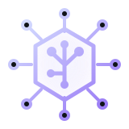
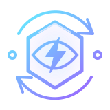
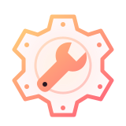
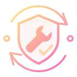

One family. Two paths to autonomy.

The neural coreManual scans & fixes
The watchful eyeAutomatic scanning

The autonomous observerScans & fixes

The repair engineAutomatic fixing

The autonomous guardianScans & fixes